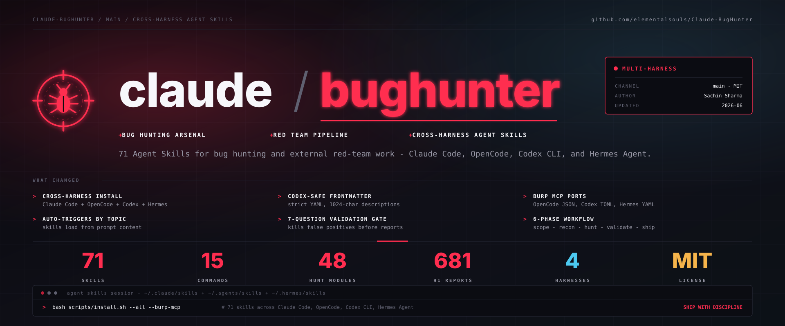
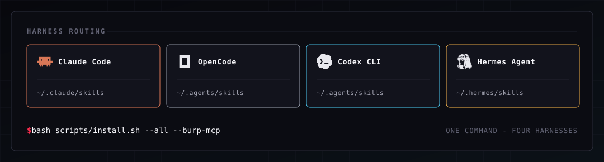

把 Claude Code 变成外部红队技能包
Claude BugHunter 不是单个脚本，而是一整套面向 bug hunting 与外部 red-team 的 Claude Code skills： 安装一次，Agent 就能按主题自动加载技巧、工具、规则与报告模板。


一眼看懂：它到底卖什么
把红队知识封装成可自动加载的 Claude 技能包
你不需要记住每个技能名再手动调用。只要描述目标和场景，系统就会按主题加载相应的 hunting、triage、reporting 与 hygiene 规则。
让 Agent 从“会聊天”变成“会按流程干活”
README 强调它面向 Claude Code、OpenCode、Codex CLI、Hermes Agent 等多种 harness。价值不只是覆盖更多工具，而是把同一套知识层同步到多种运行环境里。
只做外部攻击面，不碰内部 AD / C2 / 后渗透
这套 bundle 明确把内网 AD、C2、持久化、横向移动、EDR 绕过排除在外。它的设计目标是授权范围内的外部漏洞挖掘与红队前段工作，不是全链路渗透平台。
四层能力：为什么它不是“技能堆”
先把判断框架装进去，再谈具体 payload
README 把 `bb-methodology` 和 `redteam-mindset` 放在最前，意思很明确：先用 5-phase workflow、critical thinking、operator discipline 把思路定住，再去做验证。
48 个 hunt-* 技能，覆盖 24 类核心漏洞
它不是一个泛化的“找洞机器人”，而是把 681 个 disclosed reports 提炼成分类化模式、payload、bypass table 与 chain template，重点是能复用的检测路径。
把企业外部入口当作优先级最高的战场
M365/Entra、Okta、SharePoint、vCenter、SSL VPN、云 IAM、APK 红队都在范围内。它的叙事方式不是“列工具”，而是“按外部入口的真实风险面组织战术”。
最终落点是 triage、报告与证据卫生
7-Question Gate、VRT-aware severity、OOS rebuttal、PII redaction 这些东西说明它不只想帮你找到问题，还想帮你把结果写成能交出去的 deliverable。
怎么接入：Skill / MCP / CLI 三路并行
最适合让 Claude 自己决定何时加载能力
安装成 Claude Code plugin 后，技能会按主题自动加载，适合想要“说人话、让 agent 自己干”的场景。
/plugin marketplace add elementalsouls/Claude-BugHunter
/plugin install claude-bughunter@elementalsouls把能力挂成标准工具接口
如果你的工作流已经接了 MCP，这条路最像“把知识层暴露成工具层”，便于 Claude Code / OpenCode / Codex 统一调用。
bash scripts/install.sh --all --burp-mcp适合试用、排错和小范围接入
对于先想看效果的人，直接走命令式安装更直观；它也适合你把 bundle 复制到已有环境后做局部验证。
git clone https://github.com/elementalsouls/Claude-BugHunter.git
cd Claude-BugHunter
bash scripts/install.shClaude Code、OpenCode、Codex CLI、Hermes Agent
README 把这四个环境视为同一知识层的不同入口。对用户来说，真正重要的是“先把能力装进去，再决定在哪个 harness 上用”，而不是把平台差异当成内容差异。
- 知识层可迁移，命令层并不完全共享。
- slash commands 和 `/hunt` 仍偏 Claude-Code 专用。
- Burp MCP 可把外部验证环节继续挂到统一工具链上。
适用 / 不适用：先把边界说清
外部 bug bounty、授权红队、训练靶场
- 陌生目标的 recon、排序、验证与报告输出。
- Web / API / GraphQL / OAuth / file upload / SSRF / IDOR 等常见外部面。
- 需要把技法、证据、结论统一到同一套交付模板的场景。
内部 AD、C2、后渗透、Evasion
- 内网域渗透、横向移动、持久化、EDR 绕过不在范围内。
- 它刻意不做 post-exploit 相关能力，以免把风险边界混在一起。
- 如果你的工作目标是全链路渗透，这套 bundle 只能覆盖前半段。